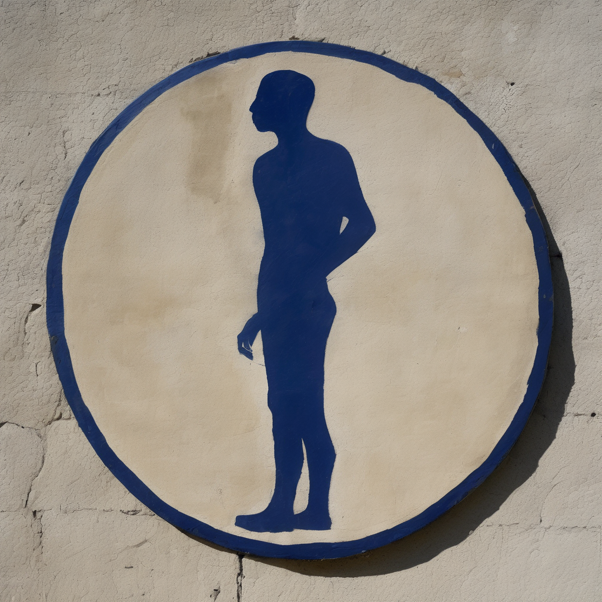

#1 · Indigo · Initiate
Neural Nomad #01: Indigo — Initiate
The Self Before Dawn
This is the moment before language finds you. When you still move through rooms like water, unaware of your own edges. Everything purple-dark and waiting.
Indigo
Initiate
Open artifact notes
Tier Arc: emergence / introspection
Threshold Note: Standing at the door between sleep and whatever comes after sleep ends forever.
Collector Meaning: You hold the last photograph of innocence. The weight of knowing what the subject doesn't yet know.